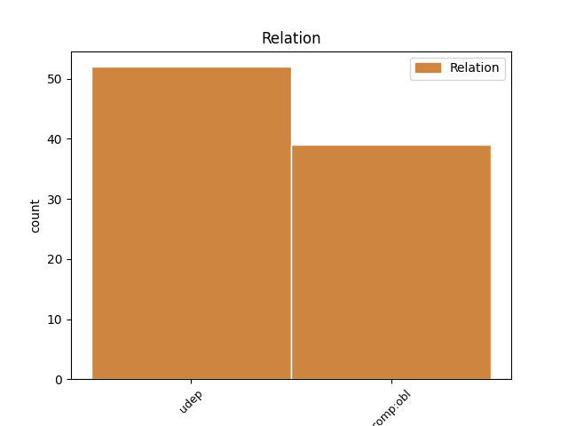
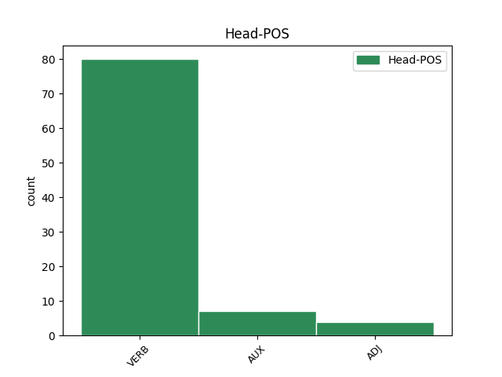
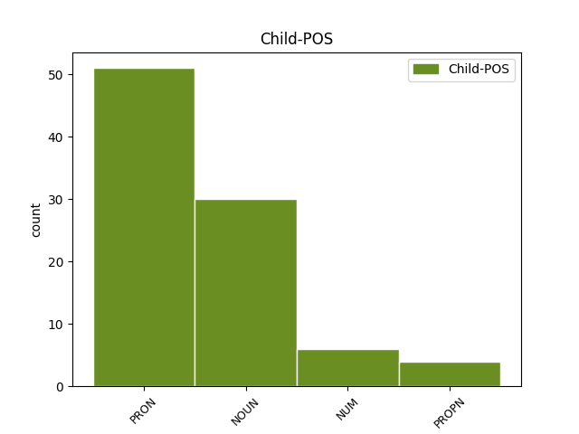

Distribution of features within this leaf



Agreement Rules sorted by frequency.
- When the dependent token is the underspecified dependency(udep) of the head token, and the dependent token is NOUN.
1 Cantos _ _ _ _ 0 _ _ _
2 de _ _ _ _ 0 _ _ _
3 os _ _ _ _ 0 _ _ _
4 espectadores _ _ _ _ 0 _ _ _
5 que _ _ _ _ 0 _ _ _
6 vén ver VERB Vpi30p Mood=Ind|Number=Plur|Person=3|Tense=Pres|VerbForm=Fin 0 _ _ _
7 estes _ _ _ _ 0 _ _ _
8 días día NOUN Scmp Gender=Masc|Number=Plur 6 udep _ _
9 a _ _ _ _ 0 _ _ _
10 película _ _ _ _ 0 _ _ _
11 ignoraban _ _ _ _ 0 _ _ _
12 que _ _ _ _ 0 _ _ _
13 o _ _ _ _ 0 _ _ _
14 Berlín _ _ _ _ 0 _ _ _
15 nazi _ _ _ _ 0 _ _ _
16 foi _ _ _ _ 0 _ _ _
17 tomado _ _ _ _ 0 _ _ _
18 por _ _ _ _ 0 _ _ _
19 los _ _ _ _ 0 _ _ _
20 soviéticos _ _ _ _ 0 _ _ _
21 e _ _ _ _ 0 _ _ _
22 non _ _ _ _ 0 _ _ _
23 por _ _ _ _ 0 _ _ _
24 los _ _ _ _ 0 _ _ _
25 norteamericanos _ _ _ _ 0 _ _ _
26 ? _ _ _ _ 0 _ _ _
1 Vas _ _ _ _ 0 _ _ _
2 andando _ _ _ _ 0 _ _ _
3 por _ _ _ _ 0 _ _ _
4 lo _ _ _ _ 0 _ _ _
5 monte _ _ _ _ 0 _ _ _
6 e _ _ _ _ 0 _ _ _
7 miras _ _ _ _ 0 _ _ _
8 para _ _ _ _ 0 _ _ _
9 as _ _ _ _ 0 _ _ _
10 uces _ _ _ _ 0 _ _ _
11 , _ _ _ _ 0 _ _ _
12 as _ _ _ _ 0 _ _ _
13 acacias _ _ _ _ 0 _ _ _
14 , _ _ _ _ 0 _ _ _
15 as _ _ _ _ 0 _ _ _
16 xestas _ _ _ _ 0 _ _ _
17 e _ _ _ _ 0 _ _ _
18 os _ _ _ _ 0 _ _ _
19 toxos _ _ _ _ 0 _ _ _
20 de _ _ _ _ 0 _ _ _
21 unha _ _ _ _ 0 _ _ _
22 maneira _ _ _ _ 0 _ _ _
23 que _ _ _ _ 0 _ _ _
24 che che PRON Rad2as Case=Dat|Clitic=Yes|Gender=Com|Number=Sing|Person=2|PronType=Prs 25 comp:obl _ _
25 fai facer VERB Vpi30s Mood=Ind|Number=Sing|Person=3|Tense=Pres|VerbForm=Fin 0 _ _ _
26 apreciar _ _ _ _ 0 _ _ _
27 moito _ _ _ _ 0 _ _ _
28 máis _ _ _ _ 0 _ _ _
29 o _ _ _ _ 0 _ _ _
30 que _ _ _ _ 0 _ _ _
31 ves _ _ _ _ 0 _ _ _
32 . _ _ _ _ 0 _ _ _
1 O _ _ _ _ 0 _ _ _
2 fundimento _ _ _ _ 0 _ _ _
3 ten _ _ _ _ 0 _ _ _
4 a _ _ _ _ 0 _ _ _
5 virtude _ _ _ _ 0 _ _ _
6 de _ _ _ _ 0 _ _ _
7 presentar _ _ _ _ 0 _ _ _
8 un _ _ _ _ 0 _ _ _
9 Hitler _ _ _ _ 0 _ _ _
10 críbel _ _ _ _ 0 _ _ _
11 , _ _ _ _ 0 _ _ _
12 humano _ _ _ _ 0 _ _ _
13 , _ _ _ _ 0 _ _ _
14 como _ _ _ _ 0 _ _ _
15 non _ _ _ _ 0 _ _ _
16 podía _ _ _ _ 0 _ _ _
17 ser _ _ _ _ 0 _ _ _
18 menos _ _ _ _ 0 _ _ _
19 , _ _ _ _ 0 _ _ _
20 familiar _ _ _ _ 0 _ _ _
21 dentro _ _ _ _ 0 _ _ _
22 de _ _ _ _ 0 _ _ _
23 o _ _ _ _ 0 _ _ _
24 que que PRON Tnms Gender=Masc|Number=Sing|PronType=Rel 25 udep _ _
25 daba dar VERB Vii30s Mood=Ind|Number=Sing|Person=3|Tense=Imp|VerbForm=Fin 0 _ _ _
26 de _ _ _ _ 0 _ _ _
27 si _ _ _ _ 0 _ _ _
28 a _ _ _ _ 0 _ _ _
29 situación _ _ _ _ 0 _ _ _
30 de _ _ _ _ 0 _ _ _
31 emerxencia _ _ _ _ 0 _ _ _
32 , _ _ _ _ 0 _ _ _
33 o _ _ _ _ 0 _ _ _
34 que _ _ _ _ 0 _ _ _
35 nos _ _ _ _ 0 _ _ _
36 permite _ _ _ _ 0 _ _ _
37 analizar _ _ _ _ 0 _ _ _
38 mellor _ _ _ _ 0 _ _ _
39 as _ _ _ _ 0 _ _ _
40 razóns _ _ _ _ 0 _ _ _
41 de _ _ _ _ 0 _ _ _
42 ser _ _ _ _ 0 _ _ _
43 de _ _ _ _ 0 _ _ _
44 o _ _ _ _ 0 _ _ _
45 fenómeno _ _ _ _ 0 _ _ _
46 nazi _ _ _ _ 0 _ _ _
47 . _ _ _ _ 0 _ _ _
1 O _ _ _ _ 0 _ _ _
2 Consello _ _ _ _ 0 _ _ _
3 de _ _ _ _ 0 _ _ _
4 a _ _ _ _ 0 _ _ _
5 Cultura _ _ _ _ 0 _ _ _
6 presentou presentar VERB Vei30s Mood=Ind|Number=Sing|Person=3|Tense=Past|VerbForm=Fin 0 _ _ _
7 o _ _ _ _ 0 _ _ _
8 pasado _ _ _ _ 0 _ _ _
9 1 1 NUM Ncnms Gender=Masc|Number=Sing|NumType=Card 6 udep _ _
10 de _ _ _ _ 0 _ _ _
11 marzo _ _ _ _ 0 _ _ _
12 o _ _ _ _ 0 _ _ _
13 catálogo _ _ _ _ 0 _ _ _
14 de _ _ _ _ 0 _ _ _
15 o _ _ _ _ 0 _ _ _
16 Fondo _ _ _ _ 0 _ _ _
17 ' _ _ _ _ 0 _ _ _
18 Guerra _ _ _ _ 0 _ _ _
19 Campos' _ _ _ _ 0 _ _ _
20 ' _ _ _ _ 0 _ _ _
21 de _ _ _ _ 0 _ _ _
22 a _ _ _ _ 0 _ _ _
23 Catedral _ _ _ _ 0 _ _ _
24 de _ _ _ _ 0 _ _ _
25 Santiago _ _ _ _ 0 _ _ _
26 , _ _ _ _ 0 _ _ _
27 conxunto _ _ _ _ 0 _ _ _
28 de _ _ _ _ 0 _ _ _
29 documentos _ _ _ _ 0 _ _ _
30 sobre _ _ _ _ 0 _ _ _
31 o _ _ _ _ 0 _ _ _
32 tema _ _ _ _ 0 _ _ _
33 xacobeo _ _ _ _ 0 _ _ _
34 que _ _ _ _ 0 _ _ _
35 acumulou _ _ _ _ 0 _ _ _
36 o _ _ _ _ 0 _ _ _
37 que _ _ _ _ 0 _ _ _
38 fora _ _ _ _ 0 _ _ _
39 bispo _ _ _ _ 0 _ _ _
40 auxiliar _ _ _ _ 0 _ _ _
41 de _ _ _ _ 0 _ _ _
42 Compostela _ _ _ _ 0 _ _ _
43 e _ _ _ _ 0 _ _ _
44 bispo _ _ _ _ 0 _ _ _
45 de _ _ _ _ 0 _ _ _
46 Cuenca _ _ _ _ 0 _ _ _
47 , _ _ _ _ 0 _ _ _
48 José _ _ _ _ 0 _ _ _
49 Guerra _ _ _ _ 0 _ _ _
50 . _ _ _ _ 0 _ _ _
1 A _ _ _ _ 0 _ _ _
2 idea _ _ _ _ 0 _ _ _
3 permanece _ _ _ _ 0 _ _ _
4 esquecida _ _ _ _ 0 _ _ _
5 en _ _ _ _ 0 _ _ _
6 as _ _ _ _ 0 _ _ _
7 gabetas _ _ _ _ 0 _ _ _
8 de _ _ _ _ 0 _ _ _
9 a _ _ _ _ 0 _ _ _
10 incomprensión _ _ _ _ 0 _ _ _
11 e _ _ _ _ 0 _ _ _
12 a _ _ _ _ 0 _ _ _
13 Casa casa PROPN Spfs Gender=Fem|Number=Sing 17 udep _ _
14 de _ _ _ _ 0 _ _ _
15 a _ _ _ _ 0 _ _ _
16 Auga _ _ _ _ 0 _ _ _
17 resulta resultar VERB Vpi30s Mood=Ind|Number=Sing|Person=3|Tense=Pres|VerbForm=Fin 0 _ _ _
18 coma _ _ _ _ 0 _ _ _
19 un _ _ _ _ 0 _ _ _
20 sucedáneo _ _ _ _ 0 _ _ _
21 , _ _ _ _ 0 _ _ _
22 quizais _ _ _ _ 0 _ _ _
23 rebaixado _ _ _ _ 0 _ _ _
24 , _ _ _ _ 0 _ _ _
25 de _ _ _ _ 0 _ _ _
26 aquel _ _ _ _ 0 _ _ _
27 monumental _ _ _ _ 0 _ _ _
28 proxecto _ _ _ _ 0 _ _ _
29 de _ _ _ _ 0 _ _ _
30 o _ _ _ _ 0 _ _ _
31 arquitecto _ _ _ _ 0 _ _ _
32 norteamericano _ _ _ _ 0 _ _ _
33 , _ _ _ _ 0 _ _ _
34 pero _ _ _ _ 0 _ _ _
35 que _ _ _ _ 0 _ _ _
36 tan _ _ _ _ 0 _ _ _
37 difícil _ _ _ _ 0 _ _ _
38 materialización _ _ _ _ 0 _ _ _
39 tiña _ _ _ _ 0 _ _ _
40 . _ _ _ _ 0 _ _ _
1 A _ _ _ _ 0 _ _ _
2 competencia _ _ _ _ 0 _ _ _
3 sobre _ _ _ _ 0 _ _ _
4 a _ _ _ _ 0 _ _ _
5 fixación _ _ _ _ 0 _ _ _
6 de _ _ _ _ 0 _ _ _
7 a _ _ _ _ 0 _ _ _
8 variedade _ _ _ _ 0 _ _ _
9 estándar _ _ _ _ 0 _ _ _
10 de _ _ _ _ 0 _ _ _
11 a _ _ _ _ 0 _ _ _
12 lingua _ _ _ _ 0 _ _ _
13 galega _ _ _ _ 0 _ _ _
14 corresponderá corresponder VERB Vfi30s Mood=Ind|Number=Sing|Person=3|Tense=Fut|VerbForm=Fin 0 _ _ _
15 lle _ _ _ _ 0 _ _ _
16 a _ _ _ _ 0 _ _ _
17 a _ _ _ _ 0 _ _ _
18 Real _ _ _ _ 0 _ _ _
19 Academia academia PROPN Spfs Gender=Fem|Number=Sing 14 comp:obl _ _
20 de _ _ _ _ 0 _ _ _
21 a _ _ _ _ 0 _ _ _
22 Lingua _ _ _ _ 0 _ _ _
23 Galega _ _ _ _ 0 _ _ _
24 . _ _ _ _ 0 _ _ _
Disagree Examples:
1 Beiras _ _ _ _ 0 _ _ _
2 propuxo _ _ _ _ 0 _ _ _
3 que _ _ _ _ 0 _ _ _
4 nacionalistas _ _ _ _ 0 _ _ _
5 e _ _ _ _ 0 _ _ _
6 socialistas _ _ _ _ 0 _ _ _
7 mostren _ _ _ _ 0 _ _ _
8 " _ _ _ _ 0 _ _ _
9 compenetración _ _ _ _ 0 _ _ _
10 perfecta _ _ _ _ 0 _ _ _
11 " _ _ _ _ 0 _ _ _
12 porque _ _ _ _ 0 _ _ _
13 os _ _ _ _ 0 _ _ _
14 cidadáns _ _ _ _ 0 _ _ _
15 captan _ _ _ _ 0 _ _ _
16 se _ _ _ _ 0 _ _ _
17 son ser AUX Vpi30p Mood=Ind|Number=Plur|Person=3|Tense=Pres|VerbForm=Fin 0 _ _ _
18 capaces _ _ _ _ 0 _ _ _
19 de _ _ _ _ 0 _ _ _
20 entender _ _ _ _ 0 _ _ _
21 se _ _ _ _ 0 _ _ _
22 en _ _ _ _ 0 _ _ _
23 un _ _ _ _ 0 _ _ _
24 futuro _ _ _ _ 0 _ _ _
25 goberno _ _ _ _ 0 _ _ _
26 ou _ _ _ _ 0 _ _ _
27 non _ _ _ _ 0 _ _ _
28 , _ _ _ _ 0 _ _ _
29 algo algo PRON Inms Gender=Masc|Number=Sing|PronType=Ind 17 udep _ _
30 decisivo _ _ _ _ 0 _ _ _
31 para _ _ _ _ 0 _ _ _
32 que _ _ _ _ 0 _ _ _
33 os _ _ _ _ 0 _ _ _
34 votantes _ _ _ _ 0 _ _ _
35 aposten _ _ _ _ 0 _ _ _
36 por _ _ _ _ 0 _ _ _
37 lo _ _ _ _ 0 _ _ _
38 cambio _ _ _ _ 0 _ _ _
39 de _ _ _ _ 0 _ _ _
40 goberno _ _ _ _ 0 _ _ _
41 . _ _ _ _ 0 _ _ _
1 Teñen ter VERB Vpi30p Mood=Ind|Number=Plur|Person=3|Tense=Pres|VerbForm=Fin 0 _ _ _
2 como _ _ _ _ 0 _ _ _
3 voceiro voceiro NOUN Scms Gender=Masc|Number=Sing 1 udep _ _
4 municipal _ _ _ _ 0 _ _ _
5 un _ _ _ _ 0 _ _ _
6 independente _ _ _ _ 0 _ _ _
7 , _ _ _ _ 0 _ _ _
8 Ventura _ _ _ _ 0 _ _ _
9 Pérez _ _ _ _ 0 _ _ _
10 Mariño _ _ _ _ 0 _ _ _
11 , _ _ _ _ 0 _ _ _
12 que _ _ _ _ 0 _ _ _
13 fai _ _ _ _ 0 _ _ _
14 a _ _ _ _ 0 _ _ _
15 política _ _ _ _ 0 _ _ _
16 por _ _ _ _ 0 _ _ _
17 libre _ _ _ _ 0 _ _ _
18 , _ _ _ _ 0 _ _ _
19 arremetendo _ _ _ _ 0 _ _ _
20 , _ _ _ _ 0 _ _ _
21 por _ _ _ _ 0 _ _ _
22 exemplo _ _ _ _ 0 _ _ _
23 , _ _ _ _ 0 _ _ _
24 contra _ _ _ _ 0 _ _ _
25 a _ _ _ _ 0 _ _ _
26 cesión _ _ _ _ 0 _ _ _
27 gratuíta _ _ _ _ 0 _ _ _
28 de _ _ _ _ 0 _ _ _
29 os _ _ _ _ 0 _ _ _
30 terreos _ _ _ _ 0 _ _ _
31 de _ _ _ _ 0 _ _ _
32 Casa _ _ _ _ 0 _ _ _
33 Mar _ _ _ _ 0 _ _ _
34 para _ _ _ _ 0 _ _ _
35 o _ _ _ _ 0 _ _ _
36 auditorio _ _ _ _ 0 _ _ _
37 ( _ _ _ _ 0 _ _ _
38 proxecto _ _ _ _ 0 _ _ _
39 estrela _ _ _ _ 0 _ _ _
40 de _ _ _ _ 0 _ _ _
41 Carlos _ _ _ _ 0 _ _ _
42 Príncipe _ _ _ _ 0 _ _ _
43 ) _ _ _ _ 0 _ _ _
44 a _ _ _ _ 0 _ _ _
45 o _ _ _ _ 0 _ _ _
46 día _ _ _ _ 0 _ _ _
47 seguinte _ _ _ _ 0 _ _ _
48 de _ _ _ _ 0 _ _ _
49 que _ _ _ _ 0 _ _ _
50 o _ _ _ _ 0 _ _ _
51 deputado _ _ _ _ 0 _ _ _
52 Antón _ _ _ _ 0 _ _ _
53 Louro _ _ _ _ 0 _ _ _
54 a _ _ _ _ 0 _ _ _
55 garantise _ _ _ _ 0 _ _ _
56 en _ _ _ _ 0 _ _ _
57 rolda _ _ _ _ 0 _ _ _
58 de _ _ _ _ 0 _ _ _
59 prensa _ _ _ _ 0 _ _ _
60 . _ _ _ _ 0 _ _ _
1 Esas _ _ _ _ 0 _ _ _
2 expresións _ _ _ _ 0 _ _ _
3 que _ _ _ _ 0 _ _ _
4 moi _ _ _ _ 0 _ _ _
5 axiña _ _ _ _ 0 _ _ _
6 nos nos PRON Rad1ap Case=Dat|Clitic=Yes|Gender=Com|Number=Plur|Person=1|PronType=Prs 7 comp:obl _ _
7 parece parecer VERB Vpi30s Mood=Ind|Number=Sing|Person=3|Tense=Pres|VerbForm=Fin 0 _ _ _
8 imposíbel _ _ _ _ 0 _ _ _
9 que _ _ _ _ 0 _ _ _
10 non _ _ _ _ 0 _ _ _
11 tivesen _ _ _ _ 0 _ _ _
12 existido _ _ _ _ 0 _ _ _
13 antes _ _ _ _ 0 _ _ _
14 . _ _ _ _ 0 _ _ _
1 Cando _ _ _ _ 0 _ _ _
2 asistimos _ _ _ _ 0 _ _ _
3 estes _ _ _ _ 0 _ _ _
4 días _ _ _ _ 0 _ _ _
5 a _ _ _ _ 0 _ _ _
6 entrada _ _ _ _ 0 _ _ _
7 en _ _ _ _ 0 _ _ _
8 vigor _ _ _ _ 0 _ _ _
9 de _ _ _ _ 0 _ _ _
10 o _ _ _ _ 0 _ _ _
11 Protocolo _ _ _ _ 0 _ _ _
12 de _ _ _ _ 0 _ _ _
13 Kioto _ _ _ _ 0 _ _ _
14 e _ _ _ _ 0 _ _ _
15 os _ _ _ _ 0 _ _ _
16 máis _ _ _ _ 0 _ _ _
17 célebres _ _ _ _ 0 _ _ _
18 agoiros _ _ _ _ 0 _ _ _
19 sobre _ _ _ _ 0 _ _ _
20 o _ _ _ _ 0 _ _ _
21 futuro _ _ _ _ 0 _ _ _
22 ecolóxico _ _ _ _ 0 _ _ _
23 de _ _ _ _ 0 _ _ _
24 o _ _ _ _ 0 _ _ _
25 planeta _ _ _ _ 0 _ _ _
26 e _ _ _ _ 0 _ _ _
27 amosa amosar VERB Vpi30s Mood=Ind|Number=Sing|Person=3|Tense=Pres|VerbForm=Fin 0 _ _ _
28 se _ _ _ _ 0 _ _ _
29 nos nos PRON Rad1ap Case=Dat|Clitic=Yes|Gender=Com|Number=Plur|Person=1|PronType=Prs 27 comp:obl _ _
30 , _ _ _ _ 0 _ _ _
31 diariamente _ _ _ _ 0 _ _ _
32 , _ _ _ _ 0 _ _ _
33 en _ _ _ _ 0 _ _ _
34 as _ _ _ _ 0 _ _ _
35 páxinas _ _ _ _ 0 _ _ _
36 , _ _ _ _ 0 _ _ _
37 en _ _ _ _ 0 _ _ _
38 os _ _ _ _ 0 _ _ _
39 diais _ _ _ _ 0 _ _ _
40 e _ _ _ _ 0 _ _ _
41 en _ _ _ _ 0 _ _ _
42 as _ _ _ _ 0 _ _ _
43 pantallas _ _ _ _ 0 _ _ _
44 de _ _ _ _ 0 _ _ _
45 os _ _ _ _ 0 _ _ _
46 medios _ _ _ _ 0 _ _ _
47 de _ _ _ _ 0 _ _ _
48 comunicación _ _ _ _ 0 _ _ _
49 a _ _ _ _ 0 _ _ _
50 catástrofe _ _ _ _ 0 _ _ _
51 de _ _ _ _ 0 _ _ _
52 o _ _ _ _ 0 _ _ _
53 cambio _ _ _ _ 0 _ _ _
54 climático _ _ _ _ 0 _ _ _
55 , _ _ _ _ 0 _ _ _
56 resulta _ _ _ _ 0 _ _ _
57 coma _ _ _ _ 0 _ _ _
58 unha _ _ _ _ 0 _ _ _
59 sopradela _ _ _ _ 0 _ _ _
60 de _ _ _ _ 0 _ _ _
61 aire _ _ _ _ 0 _ _ _
62 fresco _ _ _ _ 0 _ _ _
63 a _ _ _ _ 0 _ _ _
64 construción _ _ _ _ 0 _ _ _
65 de _ _ _ _ 0 _ _ _
66 a _ _ _ _ 0 _ _ _
67 chamada _ _ _ _ 0 _ _ _
68 " _ _ _ _ 0 _ _ _
69 Casa _ _ _ _ 0 _ _ _
70 de _ _ _ _ 0 _ _ _
71 a _ _ _ _ 0 _ _ _
72 Auga _ _ _ _ 0 _ _ _
73 " _ _ _ _ 0 _ _ _
74 en _ _ _ _ 0 _ _ _
75 a _ _ _ _ 0 _ _ _
76 Coruña _ _ _ _ 0 _ _ _
77 . _ _ _ _ 0 _ _ _
1 Pois _ _ _ _ 0 _ _ _
2 a _ _ _ _ 0 _ _ _
3 iniciativa _ _ _ _ 0 _ _ _
4 de _ _ _ _ 0 _ _ _
5 a _ _ _ _ 0 _ _ _
6 obra _ _ _ _ 0 _ _ _
7 , _ _ _ _ 0 _ _ _
8 por _ _ _ _ 0 _ _ _
9 encargo _ _ _ _ 0 _ _ _
10 de _ _ _ _ 0 _ _ _
11 o _ _ _ _ 0 _ _ _
12 Concello _ _ _ _ 0 _ _ _
13 , _ _ _ _ 0 _ _ _
14 debe _ _ _ _ 0 _ _ _
15 se _ _ _ _ 0 _ _ _
16 a _ _ _ _ 0 _ _ _
17 a _ _ _ _ 0 _ _ _
18 Empresa _ _ _ _ 0 _ _ _
19 Municipal _ _ _ _ 0 _ _ _
20 de _ _ _ _ 0 _ _ _
21 Subministro _ _ _ _ 0 _ _ _
22 de _ _ _ _ 0 _ _ _
23 Auga _ _ _ _ 0 _ _ _
24 EMALCSA _ _ _ _ 0 _ _ _
25 , _ _ _ _ 0 _ _ _
26 sociedade _ _ _ _ 0 _ _ _
27 de _ _ _ _ 0 _ _ _
28 servizos _ _ _ _ 0 _ _ _
29 de _ _ _ _ 0 _ _ _
30 solvencia _ _ _ _ 0 _ _ _
31 recoñecida _ _ _ _ 0 _ _ _
32 por _ _ _ _ 0 _ _ _
33 todos _ _ _ _ 0 _ _ _
34 os _ _ _ _ 0 _ _ _
35 grupos _ _ _ _ 0 _ _ _
36 municipais _ _ _ _ 0 _ _ _
37 , _ _ _ _ 0 _ _ _
38 que _ _ _ _ 0 _ _ _
39 constitúe _ _ _ _ 0 _ _ _
40 un _ _ _ _ 0 _ _ _
41 instrumento _ _ _ _ 0 _ _ _
42 político _ _ _ _ 0 _ _ _
43 de _ _ _ _ 0 _ _ _
44 control _ _ _ _ 0 _ _ _
45 de _ _ _ _ 0 _ _ _
46 primeira _ _ _ _ 0 _ _ _
47 magnitude _ _ _ _ 0 _ _ _
48 de _ _ _ _ 0 _ _ _
49 o _ _ _ _ 0 _ _ _
50 goberno _ _ _ _ 0 _ _ _
51 local _ _ _ _ 0 _ _ _
52 e _ _ _ _ 0 _ _ _
53 que _ _ _ _ 0 _ _ _
54 leva levar VERB Vpi30s Mood=Ind|Number=Sing|Person=3|Tense=Pres|VerbForm=Fin 0 _ _ _
55 moitos _ _ _ _ 0 _ _ _
56 anos ano NOUN Scmp Gender=Masc|Number=Plur 54 udep _ _
57 dando _ _ _ _ 0 _ _ _
58 beneficios _ _ _ _ 0 _ _ _
59 económicos _ _ _ _ 0 _ _ _
60 a _ _ _ _ 0 _ _ _
61 as _ _ _ _ 0 _ _ _
62 arcas _ _ _ _ 0 _ _ _
63 municipais _ _ _ _ 0 _ _ _
64 , _ _ _ _ 0 _ _ _
65 como _ _ _ _ 0 _ _ _
66 expresión _ _ _ _ 0 _ _ _
67 sensíbel _ _ _ _ 0 _ _ _
68 de _ _ _ _ 0 _ _ _
69 que _ _ _ _ 0 _ _ _
70 a _ _ _ _ 0 _ _ _
71 empresa _ _ _ _ 0 _ _ _
72 pública _ _ _ _ 0 _ _ _
73 tamén _ _ _ _ 0 _ _ _
74 pode _ _ _ _ 0 _ _ _
75 ser _ _ _ _ 0 _ _ _
76 tan _ _ _ _ 0 _ _ _
77 rendíbel _ _ _ _ 0 _ _ _
78 como _ _ _ _ 0 _ _ _
79 a _ _ _ _ 0 _ _ _
80 privada _ _ _ _ 0 _ _ _
81 con _ _ _ _ 0 _ _ _
82 unha _ _ _ _ 0 _ _ _
83 administración _ _ _ _ 0 _ _ _
84 adecuada _ _ _ _ 0 _ _ _
85 . _ _ _ _ 0 _ _ _